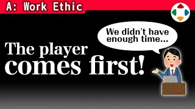
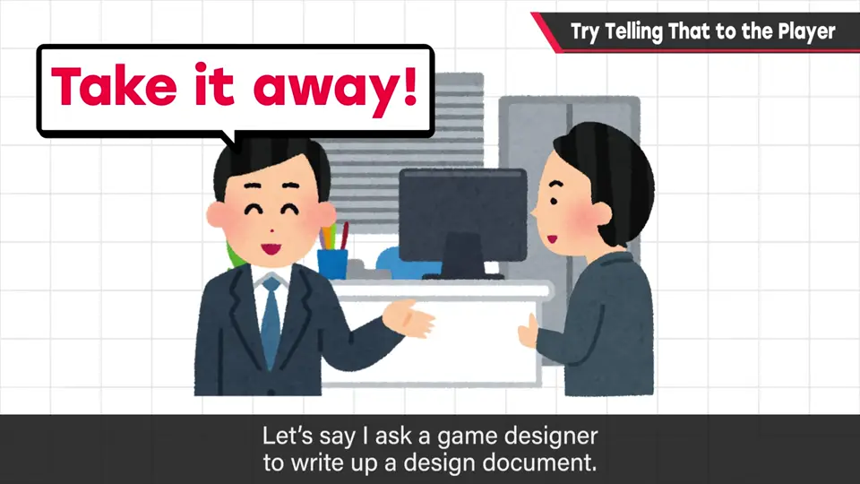
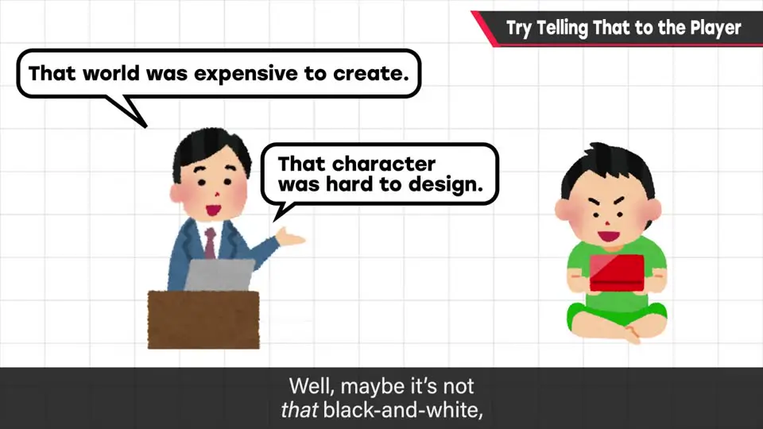
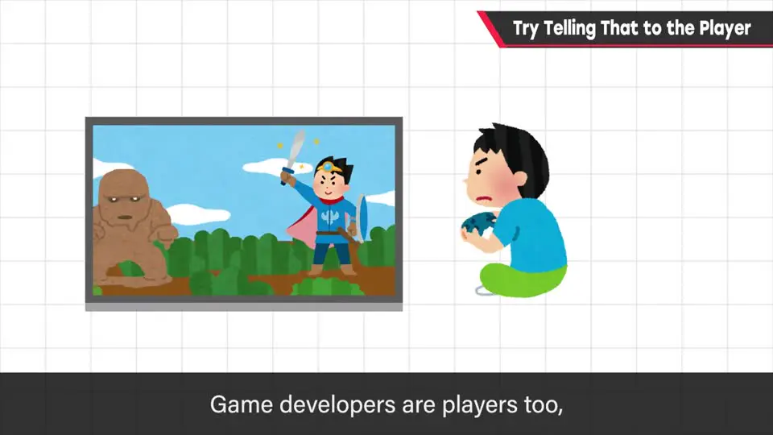
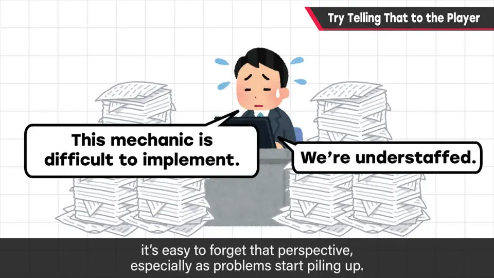

速览
游戏开发面对不讲理的计算机、投入大量人力，想做的和能做的之间必有矛盾。当规格书对开发方便、对玩家不友好时，樱井常说：「你打算挨个去跟玩家解释这些情况吗？」玩家只在乎好不好玩，不会考虑制作方的情况。开发者自己也是玩家，但站到制作方、障碍一多就容易忘掉这个视角。凡事要有以玩家为基准的视角；觉得不友好时，和策划、程序员商量有没有别的办法，在理想与技术之间取得平衡。
1. 「你打算去跟玩家解释吗？」 0:01
游戏开发面对的是「不讲道理」的计算机，又要投入大量人力，「想做的」和「能做的」之间必然有矛盾。当策划（汇总规格的人）交上来的规格书对开发方便、对玩家不友好时（有时是兼顾效率的合理平衡，有时纯粹是不便、或过度优先制作方的情况），樱井常说一句话：
「你打算挨个去跟玩家解释这些情况吗？」

2. 玩家不关心制作方的情况 0:54



- 对玩家来说，制作方的情况与他无关：他只在乎好不好玩（当然不是非 0 即 1）。
- 凡事要有以玩家为基准的视角。开发中出现问题无可避免，也有改变不了的事；喜好因人而异，未必有唯一正解；碰到技术壁垒也常见。
- 但「方便」最该优先给的对象，是玩家 / 顾客。觉得不友好时，就考虑有没有别的办法——不只和策划，也要和程序员商量。
要点：在理想与技术之间取得最理想的平衡。
自测题
1. 当规格书「对开发方便、对玩家不友好」时，樱井常说的那句话是什么？
「你打算挨个去跟玩家解释这些情况吗？」 0:44
2. 为什么开发者容易忘掉玩家视角？
开发者自己也是玩家，本应知道玩的时候会怎么想；但站到制作方后，需要克服的障碍很多（如难以实现、人手不够），意识就会离开玩家视角。 1:11
3. 觉得规格对玩家不友好时，应该怎么做？
考虑有没有别的办法，不只和策划、也和程序员商量，在理想与技术之间取得最理想的平衡；「方便」最该优先给的对象是玩家/顾客。 1:57